Nagy házi feladatomat nevezni szeretném a szépségversenyre. A program feladata elsősorban az életjáték szimulálása, de több féle játékmódot tettem bele, és ezáltal nagyon érdekes alakzatokat kapunk. A képen látható módosítás lényege, hogy a cellák csak 100 lépés után halnak ki, addig pedig egyre halványodnak.
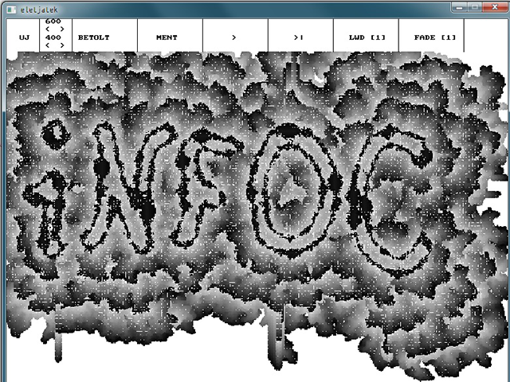A nagy házim egy Star Wars játék, amiben a játékos egy X-Wing hajóval van. Balra, illetve jobbra lehet mozogni, a space lenyomásával lőni. Az ellenséges hajók TIE Fighterek, amik lőnek is. A játéknak akkor van vége, ha a játékos beleütközik ellenséges hajóba, vagy lelövik. A program futása közben egyre több TIE jön szembe, a cél, hogy minél többet lelőjünk. Eredeti hangok is vannak hozzá, a fő soundtrack szól a játék alatt, robbanáshang, lövéshangok is be vannak építve. Kapcsolódik a játékhoz még grafikus menü, illetve game over esetén bekér egy nevet, és amennyiben a játékos úgy teljesít, bekerül a TOP10 eredménybe.
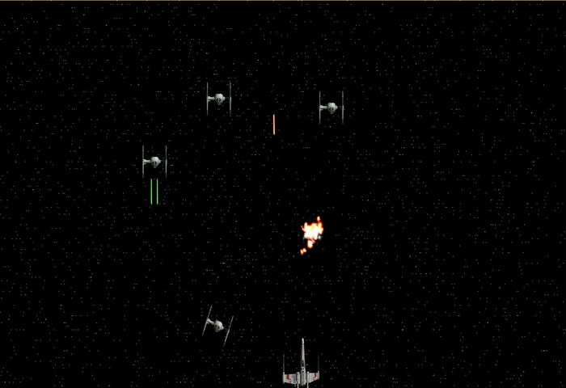A képen egy „Legyen Ön is Milliomos” játék látható akció közben. A játék során 2 segítséget lehet felhasználni, a felezést és a közönség segítségét, amit éppen most használt fel a játékos, aki nem más, mint a híres InfoC-s bagoly. Reméljük a főnyereménnyel megy ma haza! A játékhoz tartozik egyébként főmenü, ahol van dicsőséglista, valamint beállítás lehetőség is, ahol a játszó karaktert lehet beállítani.
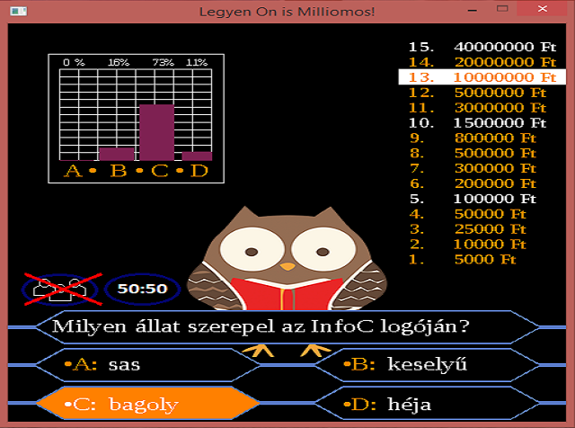A játékot a „Legyen Ön is Milliomos!” című tévéműsor alapján próbáltam elkészíteni, nagy vonalakban hasonlóképpen is működik. Egy egyszerű kvízjáték, ahol 4 lehetőség közül választhatunk. Ha eltaláljuk, akkor továbbjutunk, ha nem, akkor kiesünk. A főnyeremény 15 helyes válasz esetén üti a markunkat. A segítőlehetőségek hasznosak szorult helyzetekben. A játék továbbá szórakoztat kisebb poénjaival, illetve tanít egy kis „alapműveltségre”.
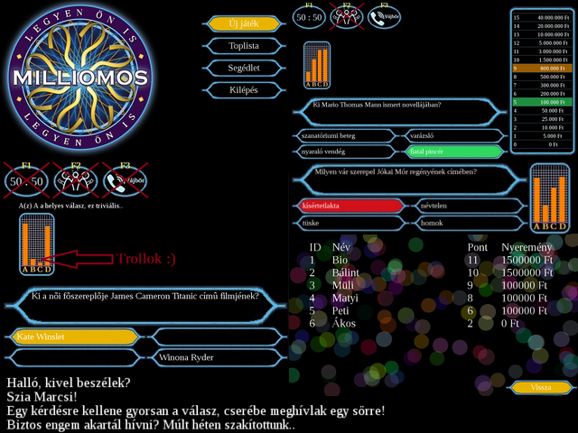A programom egy 3D-s belsőnézetes játék. A térbeli megjelenést úgy érem el, hogy a játékos szeméből a képernyő oszlopainak megfelelő számú sugarat indítotok különböző irányokba, és meghatározom a falakkal vett legközelebbi metszéspontjukat. A képernyő minden oszlopában ennek megfelelő méretű és színű vonal jelenik meg. A játékos véletlenszerűen generálódó szobák között halad, a feladat az idő lejárta előtt a lehető legtöbb pont összegyűjtése. Ezenkívül a játékban van még minitérkép, ütközésdetektálás és pontszámlista is.
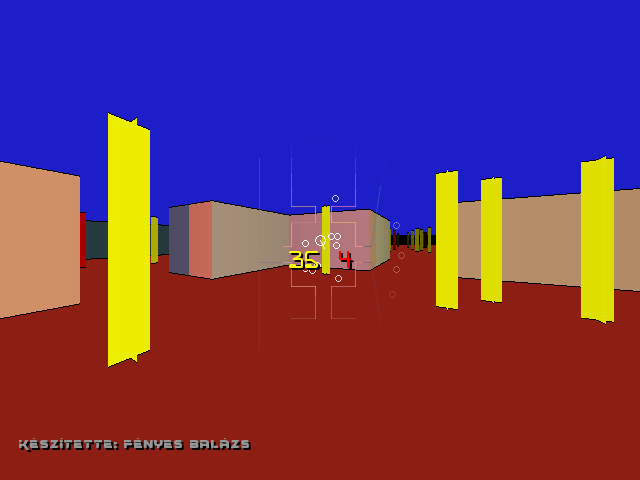Az Ultimate Amoeba egy olyan amőba játék, amely elsődlegesen abban tér el társaitól, hogy nem tartozik hozzá fix pályaméret. Ha bármelyik játékos a pálya széléhez közel ér, az automatikusan kibővül. Ez egészen addig működik, amíg a pontok (x, kör) a pixelnek a töredéke nagyságúak, így gyakorlatilag végtelen síkon lehet játszani. A meccsek is végtelen hosszúak, egy áthúzás után (5-33 pont kerülhet áthúzásra) nem ér véget a játék. Többek között funkcióihoz tartozik, hogy a játék ideje alatt lineáris(!) átmenettel be lehet állítani az AI nehézségét és agresszivitását, külön-külön mindkét játékosnak – akár AIvAI játékot is lehet „játszani”, másodpercenként átlagosan 89 pontot raknak le ekkor! Az AI-t nem lehetetlen megverni, de max nehézségen tiszta áthúzást (amikor az ellenség nem húz át) nehéz kihozni. Természetesen el lehet menteni a játékot, amelynek a betöltése egy kb. 16000 pontot tartalmazó pályán 0.2 másodperc.
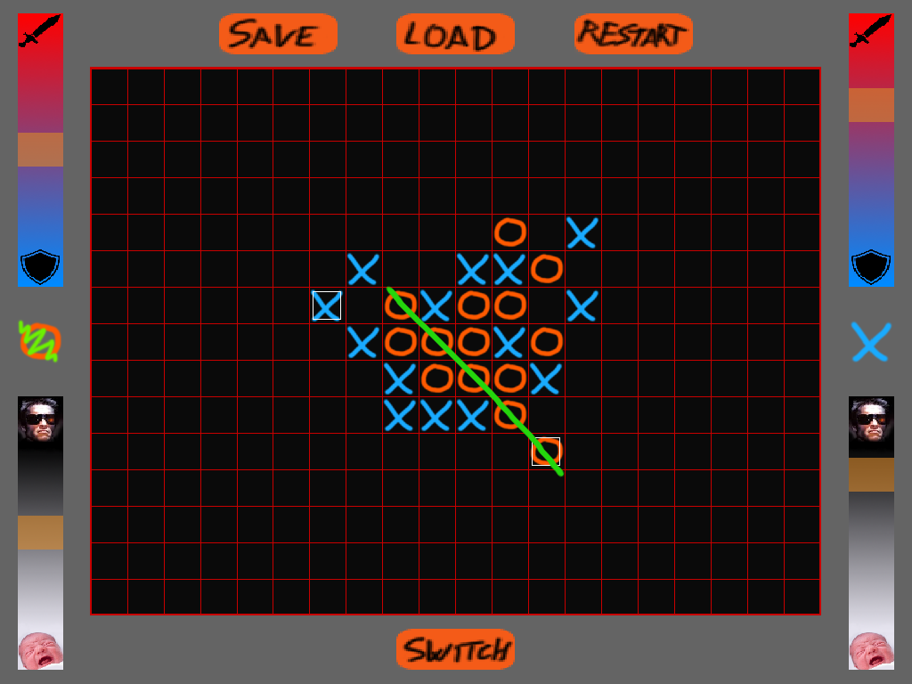Egy KRESZ gyakorló alkalmazást készítettem, amely képes kezelni több jogosítványkategóriát, azokon belül pedig kérdéscsoportokat. A kérdésekhez társíthatók illusztrációk is. A tesztlap kitöltése után a felhasználó megtekintheti, hogy a rosszul megválaszolt kérdésekre mi lett volna a helyes válasz, valamint annak indoklását. Az időeredményből és pontszámból álló eredményeket névvel együtt eltárolja az alkalmazás, ezekből dicsőségtáblát és szégyenpadot tud összeállítani.
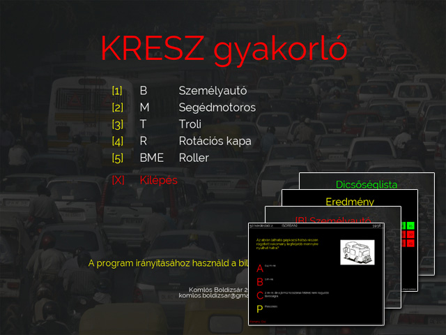A Memento egy logikai játék, melyben a játékos célja, hogy karakterével összegyűjtse a pályán található összes bogyót a lehető legkevesebb lépésből. Rossz lépés esetén a pályák megoldhatatlanná válhatnak. A pálya teljesítésekor a lépésszámnak megfelelően jár a csillag. A játék ötletgazdája a Quell Memento+ játék.
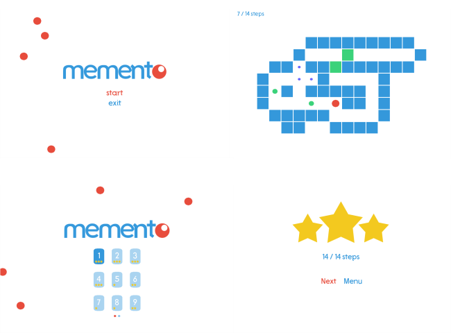A Nokia évezred eleji készülékei két okból váltak legendává: egyrészt elpusztíthatatlanok, másrészt megalapozták a mobilos játékok jövőjét. A megannyi közismert és korszakalkotó cím közül a Space Impact II-t igyekszik újra életre kelteni ez a program, pixelre pontosan megegyezve vele. A játék a Nokia 3330-as verzió klónja, annak mind a hat szintjét és minden játékelemét tartalmazza.
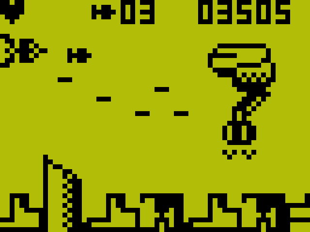A közismert Block Breaker nevű játék saját verzióját készítettem el. A program tartalmazza az alapvető játék logikát (blokkok törése, pontozás, labda pattogás), illetve azon felül található benne több beállítás (játék sebesség, power up gyakoriság stb.) és egy pályaszerkesztő is! A program kezel fullscreent is és képes minden felbontáson jól futni.
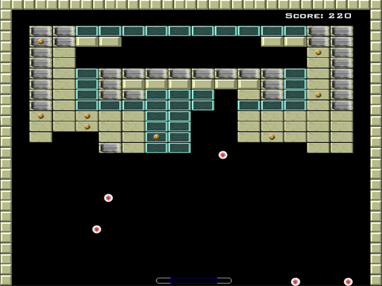A programom egy visszajátszás-kezelő a népszerű World of Tanks online játékhoz, amely képes betölteni a lejátszott csaták adatait a játék által automatikusan generált replay fájlokból, és kijelezni azokat egy GTK+ grafikus felületen. Átlagértékeket (győzelmi arány, átlagsebzés) is számol, valamint szűrési lehetőségeket biztosít a teljesítmény pontosabb felmérése érdekében.
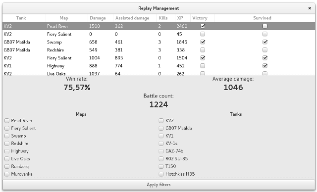A Sylviana_red egy konzolos kalandjáték-szerepjáték hibrid, ami a felhasználó által megadott fájlstruktúra alapján tetszőleges véletlenszerű elemekből építi fel a pályát. A játékos utazhat, harcolhat, kincsek után kutathat, árusokkal üzletelhet. Szintet léphet, fejlesztheti a tulajdonságait, szerezhet jobb fegyvereket, relikviákat. A képen a harc felülete látható.
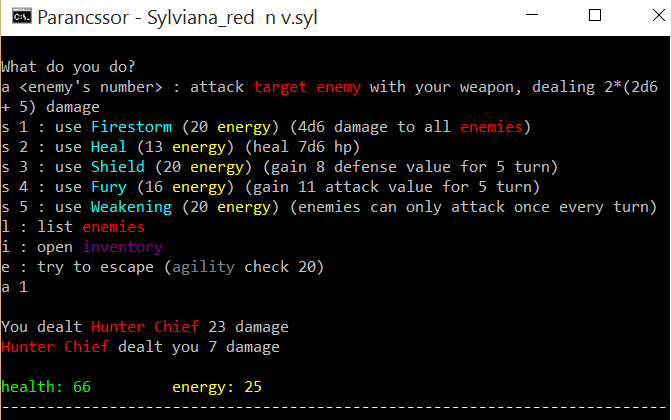